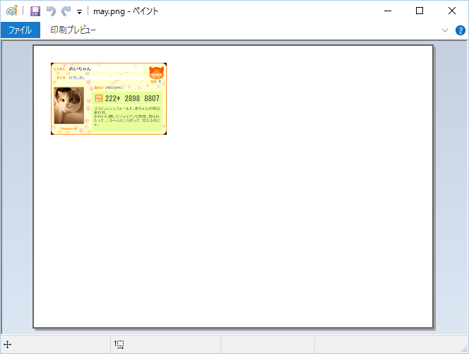

189dpiにするには
Windowsの標準機能で、画像の解像度(dpi)を変更する方法はなさそうです。
以下に、2つの例をご紹介します。
・解像度変更なしで印刷(印刷時の設定で、大きさを合わせる)
・解像度を変更して印刷する
解像度変更なしで印刷する方法
画像を右クリックして「印刷(P)」を選択します。
右のリストの「定期券サイズ」を選択します。
「写真をフレームに合わせる」のチェックをはずして印刷します。
解像度を変更する方法
例えば、
IrfanViewというソフトを使います。
まず、解像度を変更する画像を開いて、ツールバーの「i」ボタンを押します。
「Resolution:」に[189]x[189]DPI を指定して[Change]ボタンを押します。
[OK]ボタンを押して、その後上書き保存します。
解像度変更後に印刷する方法
画像を「ペイント」で開いて、イメージのプロパティを表示して、解像度が189 DPIになっている事を確認します。
189 DPIになっていない場合は、解像度の変更をやり直してください。
「印刷プレビュー」を表示し、「印刷プレビュー」リボンの中の「ページ設定」を選択します。
「ページ設定」の「拡大縮小」の「調整」を選択して[OK]を押します。

A4用紙に対して、画像がカードサイズの大きさになります。
大きさを確認後「印刷プレビュー」リボンの中の「印刷」を選択して印刷します。